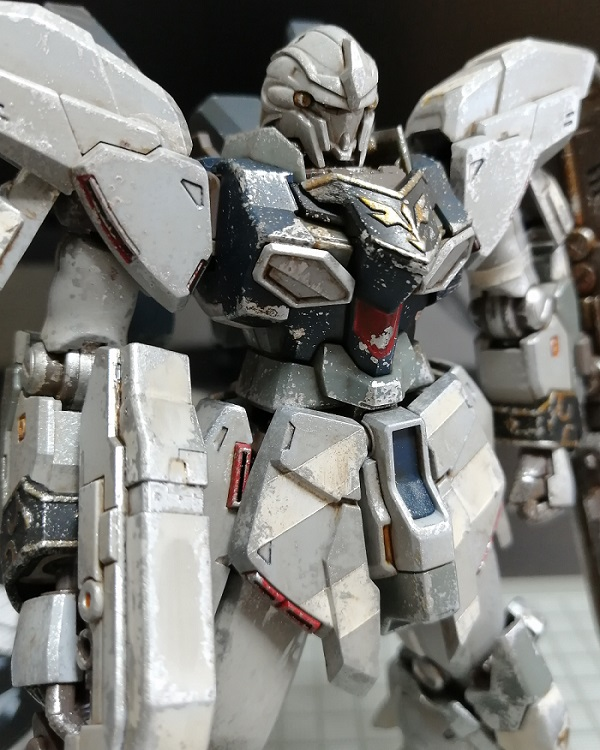
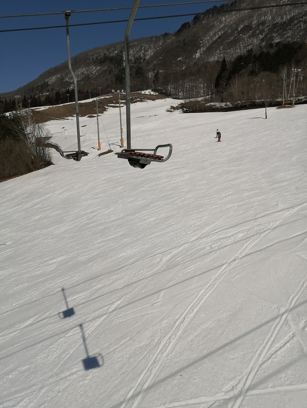
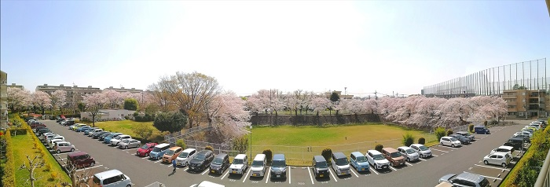

マルチメディアコンテンツ
お気に入りの動画コンテンツ
The Fastest and Funniest LEGO Star Wars story ever told...The Prequel!
- レゴブロックを使ったストップモーションで映画スターウォーズのエピソードⅠからⅢまでを再現しています。
Jamiroquai - Virtual Insanity (Official Video)
- セットの床が動いているように見えるJamiroquaiの"Virtual Insanity"のミュージックビデオです。
スマホで撮影した写真
ガンプラ

- プラモデルを初めて塗装して完成したものの写真です。
1人用リフト

- 竜王スキーパークで見つけた一人用のリフトの写真です。
桜
